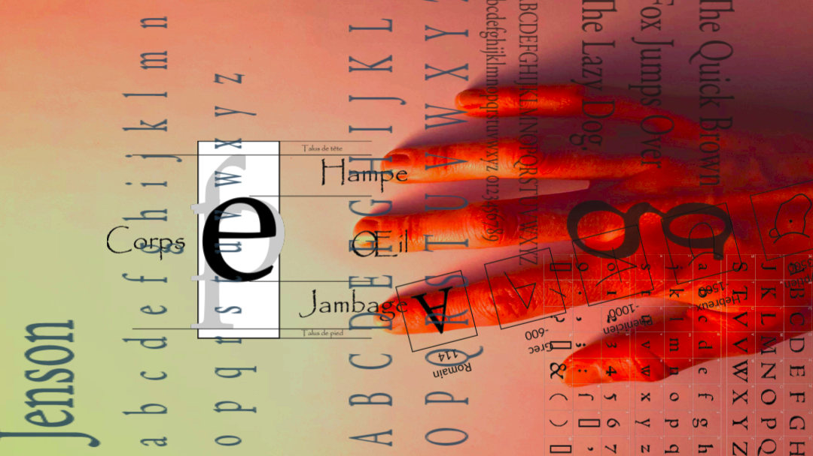

Le crédit revient à MVR qui, hier ou un autre jour, est venu à mon1 bureau et m’a demandé :
Tu as pensé à l’idée de dirty hands pour compléter tes2 petites mains ?
Alors j’ai pensé et puis j’ai eu à l’idée
Le mal nécessaire de Machiavel.
La marque qui ne part pas de Lady Macbeth.
Les mains sales de 1948.
Les petites mains me tournaient déjà en tête,
s'immisçant dans mon post-doctorat
me collant à la peau et à la paume
comme une étiquette à 7 doigts
elles trouvaient ici une nouvelle spirale.
Il ne sera pas question du problème de philosophie politique/éthique/morale3 (je laisse la main à de plus compétents esprits philosophiques) et je ne pourrai pas faire le tour de toutes les expressions et références littéraires qui pourraient bien surgir d’entre les doigts de ces mains affairées.
Je ne parlerai qu’au nom des petites mains (qu’elles soient miennes ou non).
Petites souillons4 #
Les petites mains, qu’elles soient les blanches des vierges, les potelées des bambins, les aiguisées des voleurs et les centipèdes des secrétaires, finissent toujours par tremper dans quelque chose, que ce soit du sang, de la boue, du vice ou de l’encre.
Moi j’ai les mains sales. Jusqu’aux coudes. Je les ai plongé dans la merde et dans le sang. Et puis après ? Est-ce que tu t’imagines qu’on peut gouverner innocemment ? (JPS1)
Au nom de « Tous les moyens sont bons quand ils sont efficaces », les petites mains sont un moyen comme un autre, bonnes à la tâches, efficaces à l’action car quand il y a besogne
dirty work that had to be done but no pressure
sale boulot malgré "méthode agile"
labeur ou corvée qui prend juste 2 minutes (+ 2 mois)
il y a l’ouvrier, la blanchisseuse, la secrétaire
pour plonger là où ça coupe, où ça grince et où ça vrille
pour s'acharner à une tâche qui résistera aussi longtemps qu'elle sera frottée
pour, sans y penser, recopier des mots au kilomètre sans faire de lapsus.
Et si nous connaissons la machine, c’est que nous advenons aussi quand elle déraille5
lorsqu'elle dysfonctionne
au fond elle ne fera perdre du temps qu'à nous
qui avons les ongles enfoncés dans sa structure
Ces auteur·e·s qui n’écrivent pas #
Écrire, non, ce n’est pas « avoir les mains sales »6 (l’esprit peut-être) ou bien ce ne sont pas les auteur·e·s qui écrivent mais leurs secrétaires et éditeur·rice·s.
C’est l’histoire si connue de l’auteur (masculin assumé) qui demande au directeur d’une certaine revue en sciences humaines si il a une secrétaire sous la main pour établir la bibliographie de son article.
un directeur a toujours une secrétaire sous la main
et une secrétaire a presque toujours des mains sous la main du directeur
et les mains sous la mains du directeur peuvent en effet prendre la main
pour laisser libres d'autres mains qui, elles, ne sont pas sous la main du directeur
C’est la situation trop connue d’une demande de partage des tâches qui fait émerger de dessous les tables, comme un nuées de sauterelles, les
[…] Je préfèrerai que ce soit toi qui le fasse […]
[…] Je pense que ça plus pratique si tu t’en occupes […]
[…] Ça prendra certainement moins de temps si c’est toi qui t’en charges […]
Au-delà de la question de la hiérarchie, au-delà de la question de l’autorité, ou de l’argument d’ancienneté, même au delà de la politesse, là où se croisent petite et sales dans les mains, c’est dans l’espace beaucoup plus émancipé du dysfonctionnement. Les tâches resteront ce qu’elles sont dans leurs répétitivités, leurs longueurs, leurs ennuis : elles demeureront ternes et en travail, en train de se faire, d’être polissées. Les petites mains resteront à leurs postes, devant un drap ou une page, à constater la matière impliquée et à pratiquer du temps perdu. Ce qui peut changer en revanche c’est comment se conçoit la passation.
Aux esprits qui voient dans la machine des formes d’insectes espions et hallucinent un remake du festin nu,
par crainte de rompre les vagues du numérique
par détour pour ne pas aborder une autre géographie du savoir
par tradition qui fait de la requête un droit
la tâche-tache dont vous vous excuser est autant de libertés et de pouvoirs que vous nous conférer sur le futur des écritures et de leurs réalisations.
Moi j’ai les mains sales. Jusqu’aux coudes. Je les ai plongé dans la merde et dans le sang. Et puis après ? Est-ce que tu t’imagines qu’on peut gouverner innocemment ? (JPS2)
Le dysfonctionnement nous rend maîtres.
Les cendres comme les bibliographies, ça échauffe quand on s’y immerge.
Touch me. I want to be dirty #
« Oh dirty little hands » pourrait dire Janet Weiss à Rocky et que j’imagine comme fin d’une réflexion qui résonne (un peu trop) comme un manifeste
un festin de mains qui font et vont
çà et là
mais qui correspond à la section médition à la lettre
une édition un peu plus maculée, un peu marquée, un peu moquée
un peu maligne, un peu méchante, un peu maudite
un peu miroir, un peu mienne.
Et puis les tables du savoir, c’est toujours un peu en pagaille, un peu en foutoir, un peu sale.
Références émaillées #
(par ordre d’apparition)
Le Prince, MACHIAVEL
Macbeth, SHAKESPEARE
Les Mains sales, SARTRE
L’invention de nos vies, TUIL
Le Festin nu, BURROUGHS
The Rocky Horror Picture Show, SHARMAN
-
À venir un post sur le territoire de la science. ↩︎
-
Depuis quelques temps ou récemment, les petites mains sont mes petites mains. À venir un post sur l’appartenance. ↩︎
-
Savoir si les dirigents politiques ou personnes de pouvoir puisent dans leur statut le droit ou la justification de commettre des actions immorales lorsque nécessaire et si tel est le cas, régler le paradoxe d’une figure de morale devenant moralement inadmissible. ↩︎
-
J’aurai pu poser la question « Les petites mains sont-elles sales ? », mais à part la tournure rhétorique, le titre de niveau 1 y répond déjà. ↩︎
-
En bonne boucle, je recommanderai sur le dysfonctionnement le livre à paraître de MVR, Éloge du dysfonctionnement. ↩︎
-
Désolée Tuil, mais même Sartre n’a pas eu les mains sales d’écrire les Mains sales (au propre comme au figuré). ↩︎